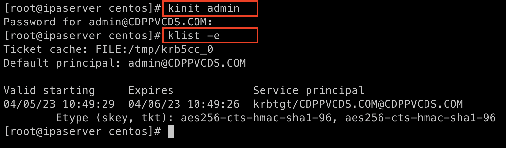

This document provides all the required information for Cloudera Partners to setup and install CDP Private Cloud on AWS Infrastructure(EC2). In addition to exploring the benefits of CDP Private Cloud with its rich Data Services, this setup can also be used for ISV/IHV certification, getting a Hands-on experience, or for any demos with potential customers.
Introduction
Cloudera Data Platform is a single platform that has two form factors CDP Public and CDP Private cloud.
CDP Public Cloud is an integrated analytics and data management platform deployed on cloud services. It consists of a number of cloud services designed to address specific enterprise data cloud use cases. This includes Data Hub powered by Cloudera Runtime, self-service experiences (Data Warehouse, Machine Learning, and Data Engineering) running on containers, the administrative layer (Management Console), and SDX services (Data Lake, Data Catalog, Replication Manager, and Workload Manager).
CDP Private Cloud is an integrated analytics and data management platform deployed in private data centers. It consists of CDP Private Cloud Base and CDP Private Cloud Data Services and offers broad data analytics and artificial intelligence functionality along with secure user access and data governance features. CDP Private Cloud (PvC) data services components run on containerized cluster and thus requires a container orchestration engine to manage all the workloads. CDP PvC offers installation with two orchestration engines.
-
Openshift Container Platform
-
Embedded Container Service (Cloudera managed)
In this document, we focus on CDP Private Cloud setup with ECS. Let’s have a look at the prerequisites before proceeding with the actual setup.
Prerequisites
Entitlements
Your License key must have the PvC DS entitlement. A current key without the entitlement will block access to ECS bits. Please raise a ticket or reach out to the Cloudera POC to get the necessary entitlements.
AWS
Administrator access to AWS account. Please verify the resource limits in the region where you wish to deploy the cloud resources.
Infrastructure Setup
Below table summarizes the machines used for this POC. This is a minimum requirement, One can increase the number of machines to achieve High Availability and Fault Tolerance. If this cluster is not meant to perform any benchmarking or performance test, one can proceed ahead with this infrastructure.
Hardware
| AWS Resource | Machine Size | Count | CDP Role | Storage |
|---|---|---|---|---|
EC2 |
m5.4xlarge |
1 |
FreeIPA server |
50 GB EBS Root volume |
EC2 |
m5.8xlarge |
4 |
CDP Base Cluster |
200 GB EBS Root volume |
EC2 |
m5.4xlarge |
6 |
CDP ECS Cluster |
150 GB Root Volume and 2 TB For ECS |
Elastic IP |
NA |
2 |
For Data Services & Cloudera Manager |
NA |
Software
Below table summarizes the list of softwares/packages and their use for setting up CDP PvC cluster.
| Software | Version | Node | Role | Availability |
|---|---|---|---|---|
Centos |
7.9 |
All Machines |
Operating System |
AMI |
IPA Server |
Latest |
IPA Machine |
For Setting up KDC,DNS |
Yum Package |
IPA Client |
Latest |
All Machines |
IPA/DNS Communication |
Yum Package |
NFS Utility Package |
Latest |
All Machine |
NFS Communication |
Yum package |
Cloudera Manager |
7.9.5 |
CDP Base |
Management |
Cloudera Repo |
Cloudera Runtime |
7.1.8 |
CDP Base and ECS Nodes |
Runtime |
Cloudera Repo |
Cloudera ECS |
1.5.0 |
ECS Cluster Nodes |
Data Services |
Cloudera Repo |
OpenJDK |
1.8 |
All Machines |
All CDP Hosts |
Cloudera Repo |
Summary
The below table contains the names assigned to the EC2 instances and to some other required components. Going forward in this document will refer to them by name.
Note: The hostnames mentioned here are just for convenience. You may choose to have the hostnames as per your requirements.
| Name | Description |
|---|---|
pvcbasemaster |
One Node CDP Private Cloud Base Master |
pvcbaseworker1 to pvcbaseworker3 |
CDP Base Cluster Worker Nodes |
pvcipaserver |
FreeIPA Server |
pvcecsmaster |
ECS Master Node |
pvcecs1 to pvcecs6 |
ECS Worker Nodes |
PVCSG |
Common Security Group For All EC2. |
PVCBASE.COM |
Dummy Domain For POC Purpose |
Once you have familiarized yourself with all the information mentioned above, you can start with the preliminary work for CDP Base setup.
Preliminary Work
Before getting into the actual installation of CDP Private Cloud Base & Data Services we need to prepare our machines and perform some steps to meet the prerequisites.
Create Base AMI
In this step, an AMI will be created which will serve as the base AMI to provision all the EC2 instances that form the CDP PvC cluster.
Step1
-
Login to the AWS account and select the Region in which you want to deploy the cluster.
-
Start a t2.micro instance by using the AMI CentOS 7 (x86_64) - with Updates HVM and deploy it in the Public Subnet.
-
Ensure that the OS version is Centos 7.9.
-
To verify the version, run the below command. It should return CentOS Linux release 7.9.2009 (Core).
cat /etc/centos-release
-
If the output shows the version as Centos 7.6, then run the below command to update the OS to 7.9. Before updating, switch to root account.
sudo su - root yum update -y
-
Generate a password protected private key by using the below command and create a password for this private key by entering it when prompted.
ssh-keygen -t rsa -f /root/.ssh/id_rsa_new

-
Add the newly created key into authorized_keys by using below command.
cat /root/.ssh/id_rsa_new.pub >> /root/.ssh/authorized_keys
-
Download the id_rsa_new key file to your local machine by using sftp. This will be required at the time of installation.
Step2
-
Reboot the instance and re-login and change the user to root.
-
Disable SELinux: Open the file /etc/selinux/config for editing and update the value as shown below.
vi /etc/selinux/config
SELINUX=disabled

-
Set swappiness to 1: Open the file /etc/sysctl.conf for editing and add the below line.
vi /etc/sysctl.conf vm.swappiness=1

-
Disable Transparent Huge Pages: Open the file /etc/rc.d/rc.local for editing and add the below lines.
vi /etc/rc.d/rc.local echo never > /sys/kernel/mm/transparent_hugepage/enabled echo never > /sys/kernel/mm/transparent_hugepage/defrag
-
Disable IPV6: Open the file /etc/rc.d/rc.local for editing and add the below lines.
vi /etc/rc.d/rc.local sysctl -w net.ipv6.conf.all.disable_ipv6=1 sysctl -w net.ipv6.conf.default.disable_ipv6=1 sysctl -w net.ipv6.conf.lo.disable_ipv6=0

-
Add execute permission: Run the below command to add execute permission to the file /etc/rc.d/rc.local.
chmod +x /etc/rc.d/rc.local
-
Install packages: Install the packages ipa-client, wget, ntpd through yum using the below command.
yum install -y ipa-client wget ntpd
Step3
-
Create AMI: Open AWS console and create AMI of this machine. Once the AMI is in "Available" state, terminate this instance.
For all the EC2 instances to be created next, this AMI will be used.
Install and Setup of IPA services
In this step a DNS server will be configured and will set up this using an IPA server. In this step we will also configure other services like KDC, Directory Service on this IPA server. Also, please note that the hostnames used in this installation can be modified as per your requirements.
Step1
yum install -y ipa-server bind bind-dyndb-ldap ipa-server-dns firewalld
-
Set the hostname of this EC2 instance. The hostname should be FQDN.
sudo hostnamectl set-hostname --static ipaserver.cdppvcds.com-
Take the private IP of this machine and add an entry in /etc/hosts file.
<PRIVATE_IP_OF_MACHINE> ipaserver.cdppvcds.com-
Reboot the machine and login back.
Step2
-
Verify the hostname of the IPA server with the below command. It should return the same FQDN set in the previous step.
cat /etc/hostname-
Configure the IPA server by running below command as a root user.
ipa-server-install --setup-dns
-
Follow the on screen instructions and provide the inputs for the parameters as per the table below.
| Parameter | Value |
|---|---|
Server host name [ipaserver.cdppvcds.com] |
ipaserver.cdppvcds.com |
Please confirm the domain name [cdppvcds.com] |
cdppvcds.com |
Please provide a realm name [CDPPVCDS.COM] |
CDPPVCDS.COM |
Directory Manager password |
<Password For Directory Manager> |
Password (confirm) |
<Confirm Password> |
IPA admin password |
<Password For IPA Admin> |
Password (confirm) |
<Confirm Password> |
Do you want to configure DNS forwarders? [yes] |
no |
Do you want to search for missing reverse zones? [yes] |
no |
Continue to configure the system with these values? [no] |
yes |
Please keep the same password for both Directory manager and IPA admin so that there is no confusion in future while using the same. Also, note down the password separately.
The setup will take 10-15 Minutes. If everything goes fine then you should get an output similar to the below screenshot.
-
If the installation fails, then run the below command to uninstall and retry with the above command for installation.
ipa-server-install --uninstall
-
Update firewall rule to allow ports using below command.
firewall-cmd --permanent --add-port={80/tcp,443/tcp,389/tcp,636/tcp,88/tcp,464/tcp,53/tcp,88/udp,464/udp,53/udp,123/udp,749/tcp,749/udp}
-
Verify the setup by generating a ticket for the admin user. Execute kinit admin and provide the directory password given during ipa server installation. The command should generate the ticket and should be listed by executing klist -e. This command should return the below output.

Setup Reverse DNS Zone
In this step we will be setting up a reverse DNS zone on the FreeIPA server for reverse lookup and we will also update the network configuration files on the IPA server to use the Name Server created in Install and Setup of IPA services .
Step1
-
Login to IPA Server as root and get the private IP of the server with the below command.
hostname -i-
Open the file /etc/resolv.conf in edit mode and add the following.
nameserver <PRIVATE_IP_OF_IPASERVER>
Make sure the above is added above any other nameserver entry. The contents of the file must look similar to the below.

-
The above changes are temporary and would get overwritten if the machine is rebooted. In order to keep the nameserver entry persistent, open the file /etc/sysconfig/network in edit mode and add below entries.
NETWORKING=yes NISDOMAIN=<domain> DNS1=<Private_IP_Of_IPA_Server> NOZEROCONF=yes
The file content must look similar to the below.
-
Reboot the machine and verify the contents of /etc/resolv.conf are unchanged and ensure that there is an entry of our nameserver.
-
Run the below command to authenticate as admin through kadmin and enter the directory password.
kinit admin
-
Take the CIDR block of the VPC in which the EC2 instances are created and create a reverse DNS zone by executing the below command on the IPA Server machine.
ipa dnszone-add --name-from-ip=<YOUR_VPC_CIDR>
-
If your VPC has a CIDR 172.31.0.0/16, then the command looks as below.
ipa dnszone-add --name-from-ip=172.31.0.0/16
-
Once you execute the above command, accept the default value by hitting the enter key. It will create a reverse DNS zone by name 31.172.in-addr.arpa. (with a trailing dot)
-
Add the entry of this IPA server machine to the reverse DNS zone . We need to add the IPV4 address in reverse order. The first two octets are already added in the reverse zone above. Now we need to create a record for this machine inside that zone . In the command below you need to add the record by providing the last two octets of your machine’s private IPV4 in reverse order. Include the trailing dot after the machine name.
ipa dnsrecord-add <2nd>.<1st>.in-addr.arpa. <4th>.<3rd> --ptr-rec <ipaserver FQDN>. ipa dnsrecord-add 31.172.in-addr.arpa. 119.40 --ptr-rec ipaserver.cdppvcds.com.
Please note that there is a trailing dot after the IPASERVER FQDN in the above command.
-
The above command should succeed. In order to validate it, we need to verify the forward and reverse lookup on this machine.
-
Verify the Forward lookup by running the below command. This command should return the IPV4 of the machine in the Answer Section.
-
dig <FQDN of the IPASERVER> A
Ex:- dig ipaserver.cdppvcds.com ASample output shown below.

-
Verify the Reverse lookup by running the below command. This command should return the hostname of the machine in the Answer Section.
dig -x <Private_IP_of_IPASERVER> dig -x 172.31.40.119
Sample output shown below.

-
After the setup is complete, we need to make a kerberos config change which gets enabled automatically post the ipa server setup. Open the file /etc/krb5.conf in edit mode and comment out the line related to ccache_name as shown below.
default_ccache_name = KEYRING:persistent:%{uid}-
Post editing the config file, run the below commands to restart all the IPA services.
ipactl stop
ipactl start
Add all the machines to the DNS server
The tasks in this step need to be performed on all Machines except the IPA Server machine.
-
Provision the EC2 instances for both Base and ECS clusters. Refer to the Hardware table for machine specification, EBS Volume, and Security Group details.
-
Set the static hostname on each machine by using the command below.
sudo hostnamectl set-hostname --static <Hostname_with_Your_Domain>
-
Either copy the /etc/resolv.conf and /etc/sysconfig/network file from the IPA server machine to all the machines or update manually on each machine to have the same configuration on all the hosts.
-
On each machine run the below command to set up the IPA client.
ipa-client-install --force-ntpd
-
Enter the values for these parameters as below. After entering these values, it should return the message as "The ipa-client-install command was successful".
| Parameter | Value |
|---|---|
Continue to configure the system with these values? [no]: yes |
yes |
User authorized to enroll computers: |
admin |
Password for admin@<Your_Domain> |
<Password created earlier> |

-
Generate the kerberos ticket for admin by running the below command.
kinit admin
-
Once the ipa-client configuration is successful we need to create a record in the Reverse DNS zone as well for each machine. Use the below command as reference and make changes as per your configuration/machines private IP and Hostname.
Private IP of the EC2 instance: 172.31.0.234 Hostname of the EC2 instance: cdpbase.cdppvcds.com
Generate the command as shown below and run the same on all the FreeIPA agents, that includes all the nodes of Base and ECS cluster.
ipa dnsrecord-add <2nd>.<1st>.in-addr.arpa. <4th>.<3rd> --ptr-rec <IPA_Client FQDN>.
ipa dnsrecord-add 31.172.in-addr.arpa. 234.0 --ptr-rec cdpbase.cdppvcds.com.-
The record for the machine should be created in the Reverse DNS zone.
-
Verify the Forward and Reverse Lookup from each machine as mentioned previously.
-
Verify the Forward lookup by running the below command. This command should return the IPV4 of the machine in the Answer Section.
-
dig <FQDN of the IPAAGENT> A
Ex:- dig cdpbase.cdppvcds.com ASample output shown below.

-
Verify the Reverse lookup by running the below command. This command should return the hostname of the machine in the Answer Section.
dig -x <Private_IP_of_IPAAGENT> dig -x 172.31.0.234
Sample output shown below.

Create Local mirror for ECS bits
This is an optional step however if performed, it can save a good amount of time during the ECS installation. The total size of ECS bits/images is nearly 85G and the installer will take time to download these during the actual installation.
-
Identify any machine from the EC2 instances created before and install httpd by using the below command.
yum install -y httpd
-
Start the httpd service and enable it to run even after reboot with the commands below.
systemctl start httpd systemctl enable httpd
-
Create a directory to save the ECS images.
mkdir -p /var/www/html/cdp-pvc-ds
-
Navigate to the above created directory and create a new shell script file with the below content.
vi download_ecs.sh
-
Copy the below script in the newly created file download_ecs.sh.
echo "Starting the ECS bits download"
wget -l 0 --recursive r-no-parent -e robots=off -nH --cut-dirs=2 --reject="index.html*" -t 10 https://<CDP_LICENSE_USERNAME>:<CDP_LICENSE_PASSWORD>@archive.cloudera.com/p/cdp-pvc-ds/latest/ -P /var/www/html/cdp-pvc-ds/latest
RETURN_VAL=$?
echo "--------------------------------------------------------"
if [[ "${RETURN_VAL}" == 0 ]]; then
echo "Successfully downloaded."
else
echo "Download not successful."
fi-
Run this script in nohup to keep the job running in background.
nohup sh download_ecs.sh > download_ecs.log &
-
This will take nearly 5-6 hours based on the network speed. Keep checking the logs of download_ecs.log and if you see the Successfully downloaded message, then it means all the images got downloaded successfully. To check the logs, you can use any of the below commands. ,shell]
tail -f download_ecs.log cat download_ecs.log
-
Once the images got successfully downloaded, please proceed to the CDP Private Cloud Base setup.
Private Cloud Base Setup
This section outlines the steps needed to set up a 4 nodes Private Cloud Base . Below are the prerequisites which base cluster should have before installing/configuring Data Services.
Download the Installer & Cloudera Repository file
-
Step 1: Login the pvcbasemaster EC2 instance and switch to 'root' user.
-
Step 2: Navigate to /etc/yum.repos.d/ directory
cd /etc/yum.repos.d/
-
Step 3: Execute below command after replacing your Cloudera Paywall Credentials.
wget https://<user_name>:<password>@archive.cloudera.com/p/cm7/7.9.5/redhat7/yum/cloudera-manager.repo
-
Step 4: Navigate to /tmp/ directory
cd /tmp/
-
Step 5: Download the cloudera-manager-installer.bin file by using below command after replacing your Cloudera Paywall Credentials
wget https://<user_name>:<password>@archive.cloudera.com/p/cm7/7.9.5/cloudera-manager-installer.bin
-
Step 6: Add the Executable permission to above downloaded file.
chmod u+x cloudera-manager-installer.bin
Install Cloudera Manager with Embedded Database.
-
Step 1: Navigate to /tmp directory.
cd /tmp/
-
Step 2: Execute the bin file using below command to install.
./cloudera-manager-installer.bin
1: The Cloudera Manager Read Me page appears.

Click Next
2: The Cloudera Standard License page appears.

Click Next to accept the license agreement
3: The installer starts and does the following:
-
A: Installs Oracle JDK:

-
B: Installs the Cloudera Manager Server.

-
C: Installs the embedded PostgreSQL packages and starts the database and Cloudera Manager Server.

NOTE:
If the installation is interrupted, run the following command on the Cloudera Manager Server host before you retry the installation:sudo /usr/share/cmf/uninstall-cloudera-manager.sh
The log files for the installer are stored in /var/log/cloudera-manager-installer/.
4: Exit the installer:
-
A: When the installation completes, the complete URL for the Cloudera Manager Admin Console displays, including the default port number: 7180.
Make a note of this URL or take a screen capture as you will need it for the next task.

-
B: Click Ok
The success message appears
-
C: Click OK to exit the installer.

Setup Private Cloud Base Cluster
In this step, we will setup the Base cluster which will serve as the DataLake for the CDP Data Services that need the SDK capabilities for the cluster wide features like lineage, governance, security etc..,
Upload license file
-
Once the cloudera-manager(CM) installation is completed, open the endpoint shown in the previous steps, i.e., http://AWS_Elastic_IP_for_Cloudera_Manager:7180 and login to the CM using default credentials.
Username: admin
Password: admin
The Welcome to Cloudera Manager page appears.
-
Since you would have received the CDP license before, select Upload Cloudera Data Platform license and upload the downloaded .txt or .zip file with the license information. Click Continue.
The Add Private Cloud Base Cluster page appears. Next, we will enable AutoTLS for CM.
Install Cloudera-manager-agent
-
As a prerequisite step to enabling AutoTLS, login to the base master node as root, and run the below command to install cloudera-manager-agent.
yum install cloudera-manager-agent -y
-
Once it is installed successfully, start and enable the cloudera-scm-agent service.
systemctl start cloudera-scm-agent && systemctl enable cloudera-scm-agent
-
Verify the same by running the below command. This should return the output stating the service is active and in running state.
systemctl status cloudera-scm-agent
Enable Auto-TLS
-
Once the cloudera-scm-agent service is running successfully, switch to the Cloudera Manager screen on your browser and click on here to setup Enable AutoTLS on the Add Private Cloud Base Cluster page.
-
Enter the values for the parameters as shown below.
| Parameter | Value |
|---|---|
Enable TLS for |
All existing and future clusters |
SSH username |
root |
Authentication method |
All hosts accept same private key |
Private Key |
Choose the private key created in the Base AMI setup section |
Enter the passphrase |
Enter the passphrase given at the time of key-pair creation |
Confirm the passphrase |
Enter the passphrase again |
Click Next.
-
You should see this page next if all the values are entered properly.
Click Finish.
-
Login to the base master host as root and run the below command as suggested in the previous screenshot.
systemctl restart cloudera-scm-server
-
Run the below command to check the logs of cloudera-scm-server starting up. Wait until you see the Started Jetty server message on the screen.
tail -f /var/log/cloudera-scm-server/cloudera-scm-server.logscm-server.log
-
Once you see this message on the logs, open the CM endpoint, http://AWS_Elastic_IP_for_Cloudera_Manager:7180, in a new incognito window.
-
The URL should get redirected to https at 7183 port. This means that the AutoTLS configuration is successful.
You might get a warning message on the browser related to the certificate. You can ignore the warning and visit the website as this is not a signed certificate.
-
Enter the default credentials and login. You should see AutoTLS enabled as shown in the image below.
-
Click Continue and continue with the cluster setup wizard. The Cluster Basics section appears.
Enable SSL On Embedded DB
-
Login to the base master node.
-
Stop Cloudera SCM server and Cloudera Embedded DB service. Please note that the order should not be changed. i.e., first the scm-server should be stopped and then the scm-server-db.
systemctl stop cloudera-scm-server systemctl stop cloudera-scm-server-db
-
Navigate to /var/lib/cloudera-scm-agent/agent-cert directory.
cd /var/lib/cloudera-scm-agent/agent-cert
-
Get the password from the file cm-auto-host_key.pw. Note down this password in an editor.
cat cm-auto-host_key.pw
-
We will use the host certificate for enabling SSL. Extract the host certificate from cm-auto-host_keystore.jks using keytool utility. Place the Base master FQDN in the placeholder.
/usr/java/jdk1.8.0_232-cloudera/jre/bin/keytool -export -alias <Base Master FQDN> -keystore \
cm-auto-host_keystore.jks -rfc -file cm.certEx:-
/usr/java/jdk1.8.0_232-cloudera/jre/bin/keytool -export -alias cdpbase.cdppvcds.com -keystore \ cm-auto-host_keystore.jks -rfc -file cm.cert
openssl rsa -in cm-auto-host_key.pem -out cm.key
-
The above steps create a .cert and cm.key file in that location.
-
Copy those files to the folder /var/lib/cloudera-scm-server-db/data/.
cp /var/lib/cloudera-scm-agent/agent-cert/cm.cert /var/lib/cloudera-scm-server-db/data/ cp /var/lib/cloudera-scm-agent/agent-cert/cm.key /var/lib/cloudera-scm-server-db/data/
-
Navigate to the folder /var/lib/cloudera-scm-server-db/data/ and change the owner:group to cloudera-scm:cloudera-scm with 600 permissions for cm.key file.
cd /var/lib/cloudera-scm-server-db/data chown cloudera-scm:cloudera-scm cm.key chmod 600 cm.key
-
At the same location, /var/lib/cloudera-scm-server-db/data, edit the file postgresql.conf and change below parameters values and save the file.
-
ssl = on
-
ssl_cert_file = 'cm.cert'
-
ssl_key_file = 'cm.key'
-
Ensure to uncomment these lines as they are commented out by default.
-
Start the embedded DB and Cloudera SCM Server.
systemctl start cloudera-scm-server-db systemctl start cloudera-scm-server
-
Run the below command to check the logs of cloudera-scm-server starting up. Wait until you see the Started Jetty server message on the screen.
tail -f /var/log/cloudera-scm-server/cloudera-scm-server.log
-
The Cloudera Manager should come up.
Kerberos Integration
-
Before proceeding further with KDC setup, we need to ensure that the changes to krb5.conf related to default cache is not reversed. View the contents of the file /etc/krb5.conf and check whether the property default_ccache_name is commented out. If not, then open the file and comment it.
#default_ccache_name = KEYRING:persistent:%{uid}If you have made any changes, only then run the below commands to restart all the IPA services. If not, skip to the next step.
ipactl stop
ipactl start-
Login to Cloudera Manager after enabling SSL on embedded DB.
-
In the left pane, click on Administration and then on Security.
-
Click on Kerberos credentials and then click on Set up KDC for this Cloudera Manager.

-
On the first page enter details as below and click continue.
-
Enable Manage krb5.conf through Cloudera Manager option.
-
Next, enter the details as per the configuration of FreeIPA you did before. i.e., provide the domain and password of admin user configured earlier in the FreeIPA setup.
Enter the REALM portion of the principal in upper-case only to conform to Kerberos convention.
-
KDC Account manager credentials should get imported successfully as shown below.
LDAP Integration
-
From Cloudera Manager, navigate to Administration→Settings.
-
In the filter section, click on External Authentication.
-
Enter details as per the below images.
-
LDAP URL
ldap://<ipaserver_fqdn>>:389/ Ex:- ldap://ipaserver.cdppvcds.com:389/
-
LDAP Bind User Distinguished Name
uid=admin,cn=users,cn=accounts,dc=<domain>,dc=com Ex:- uid=admin,cn=users,cn=accounts,dc=cdppvcds,dc=com
-
LDAP Bind User Distinguished Name for monitoring
uid=admin,cn=users,cn=accounts,dc=<domain>,dc=com Ex:- uid=admin,cn=users,cn=accounts,dc=cdppvcds,dc=com

-
LDAP User Search filter
(&(uid={0})(objectClass=person))
-
LDAP User Search Base
cn=users,cn=accounts,dc=<domain>,dc=com Ex:- cn=users,cn=accounts,dc=pvcbase,dc=com
-
LDAP Group Search filter
(&(member={1})(objectClass=posixgroup))
-
LDAP Group Search Base
cn=groups,cn=accounts,dc=<domain>,dc=com Ex:- cn=groups,cn=accounts,dc=pvcbase,dc=com
-
Click Save.
Add hosts to Cloudera Managaer
-
Click on Add a new cluster.
-
Enter a name for the cluster and click Continue.
-
Enter the cluster host names or IP addresses in the Hostnames field. Click Search.
-
Cloudera Manager discovers the hosts.
-
Verify host entries, deselect any that you do not want to install services on, and click Continue. The Select Repository section appears.
-
Select Custom Repository option and point to 7.9.5. Refer to the below screenshot.
-
Select Install a Cloudera-provided version of OpenJDK.
-
Click Continue. The Enter Login Credentials section appears.
-
On the Enter Login Credentials page, select the SSH Username and provide the private key generated in Preliminary Work section in Step1. Also, enter the passphrase entered while generating the key-pair.
-
The Install Agents section appears showing the progress of the installation.
-
After the agents are installed, the Install Parcels section appears showing the progress of the parcel installation.
-
After the parcels are installed the Inspect Cluster section appears.
-
Do the following:
-
Click Inspect Network Performance.
-
After the network inspector completes, click Show Inspector Results to view the results in a new tab. Address any reported issues, and click Run Again.
-
-
Click Inspect Hosts.
-
After the host inspector completes, click Show Inspector Results to view the results in a new tab. Address any reported issues, and click Run Again.
-
-
Both the inspection tests should run successfully.
-
-
Click Continue.
Create Base Cluster(Datalake cluster for ECS)
-
The Add Cluster - Configuration page appears. Click on Custom Services.
-
Select the below Cloudera Services to be installed on the cluster and click Continue.
-
Atlas
-
Solr
-
HBase
-
HDFS
-
Hive (For Hive Metastore Server only)
-
Hive_on_Tez (For HiveServer2)
-
Kafka
-
Ozone
-
Ranger
-
Tez
-
YARN
-
Zookeeper
-
-
Next, you need to assign hosts to different roles across all the selected services. Use the below table as a reference to assign the roles.
| Role Instance | Host |
|---|---|
Kafka |
Kafka Broker - base-master |
Atlas |
Atlas Server - base-master |
Core Configuration |
Gateway - base-master |
HBase |
* Master - base-master * RegionServer - base-master |
HDFS |
* NameNode - base-master * DataNode - base-worker1, base-worker2, base-worker3 * NodeManager - base-worker1, base-worker2, base-worker3 |
Hive |
* Gateway - base-worker1, base-worker2, base-worker3 * Metastore Server - base-master |
Hive on Tez |
* Gateway - base-worker1, base-worker2, base-worker3 * HiveServer2 - base-master |
Cloudera Management Service |
* Service Monitor - base-master * Host Monitor - base-master * Reports Manager - base-master * Event Server - base-master * Alert Publisher - base-master |
Ozone |
* Storage Container Manager - base-master * Ozone Manager - base-master * Ozone Recon - base-master * S3 Gateway - base-master * Gateway - base-worker1, base-worker2, base-worker3 * Ozone DataNode - base-worker1, base-worker2, base-worker3 |
Ranger |
* Ranger Admin - base-master * Usersync - base-master * Ranger Tagsync - base-master |
Solr |
* Solr Server - base-master |
Tez |
* Gateway - base-master |
YARN |
* ResourceManager - base-master * JobHistory Server - base-master * NodeManager - base-worker1, base-worker2, base-worker3 |
ZooKeeper |
* Server - base-master |
-
Click Continue.
-
On the Setup Database page, select Use Embedded Database.
-
Click on Test Connection.
-
Once the Test Connection succeeds, click on Continue.
-
The Enter Required Parameters page appears.
-
Enter a suitable name for Ozone Service ID.
-
For all the remaining parameters, set a common password so that it becomes easier while using those services.
-
This password must have 1 lowercase, 1 uppercase, and 1 numeric value. Failing to adhere this, the final step in the cluster setup would fail.
-
Click Continue.
-
The Review Changes page appears. Set a password for Atlas. You can set it to the same value set for Ranger above.
-
Scroll down and update the HDFS disks configuration according to the below.
-
DataNode Data Directory:
-
NameNode Data Directories:
-
HDFS Checkpoint Directories:
-
-
Click Continue.
-
On the next page, Configure Kerberos, enable kerberos and use default kerberos principals.

-
A few set of commands are run in background. Wait for them to get executed successfully. Once done, click Continue.

-
Next, all the Cloudera services would get started and their prerequisite operations would also be run. These processes will run in a combination of serial and parallel processes. Wait for them to complete.
-
Once completed, you will see a Green tick next to all the steps.
-
Click Continue.
-
You will see a Summary page
-
Click FInish.
-
This will navigate to the main page where you can see all the services installed.
-
All the services should be in Healthy state. If there are any instances in Bad Health, troubleshoot the same and fix it.
-
This completes the CDP Private Cloud Base cluster setup.
Private Cloud Data Services Setup
Prepare ECS Nodes
-
Start the EC2 instances designated for the ECS cluster created in the step Add all the machines to the DNS server in the Preliminary Work section. Refer to the Hardware table for machine type , EBS Volume Size, and associated Security Group.
-
On each of the ECS hosts, create three partitions of the attached 2T EBS volume (non-root) and mount those partitions as below.
-
Allocate an Elastic IP on AWS and associate it with the ECS Master EC2 instance.
Install ECS
-
In Cloudera Manager, click Data Services in the left menu.
-
The Add Private Cloud Containerized Cluster page appears. Click Continue.
Alternatively, you can also click Add > Add Cluster at the top right in Cloudera Manager, then select Private Cloud Containerized Cluster as the cluster type.
-
On the Getting Started page of the installation wizard, select Air Gapped as the Install Method and select your local repo URL in Custom Repository Section. This local repo is from the step Create Local mirror for ECS bits where httpd is installed on an EC2 instance to download the ECS images.

-
Once you see the correct version at the bottom of the page as shown in the above screenshot, Click Continue.
-
In the Cluster Basics page, type a name for the Private Cloud cluster that you want to create in the Cluster Name field. From the Base Cluster drop-down list, select the cluster that has the storage and SDX services that you want this new Private Cloud Data Services instance to connect with. Click Continue.
-
In the Specify Hosts page, provide a list of available ECS hosts.
-
In the Select JDK page, select Install a Cloudera-provided version of OpenJDK .
-
On the Enter Login Credentials page, select the SSH Username and provide the private key generated in Preliminary Work section in Step1. Also, enter the passphrase entered while generating the key-pair.
-
The Install Agents page appears with the progress bar showing the components getting installed like openjdk. Once it is complete, click Continue.
-
Next on the Assign Roles page, ensure that the roles assignment for your new Private Cloud Containerized cluster is as follows.
| Role | ECS Host |
|---|---|
Docker Server |
All ECS Hosts (i.e., ECS master and worker nodes) |
ECS Server |
ECS Master only |
ECS Agent |
ECS Workers only |
-
On the Configure a Docker Repository page, select Use an embedded Docker repository option.
-
After choosing the embedded docker option, select default.
-
On the Configure Data Services page, modify the storage related parameters as shown below.
-
On the Configure Databases page, select Create embedded databases with default values. Click Continue.
-
On the Install Parcels page, the selected parcels are downloaded and installed on the host cluster. Click Continue.
-
On the Inspect Cluster page, you can inspect your network performance and hosts. If the inspect tool displays any issues, you can fix those issues and run the inspect tool again. Click Continue.
-
The installation progress is displayed on the Install Data Services page. This step will take nearly an hour to complete.
-
When the installation is complete, you will see the Summary image. You can now launch CDP Private Cloud.
Accessing CDP Private Cloud
-
From Cloudera Manager screen, click on Data Services(New) in the left pane.
-
On the CDP Private Cloud Containerized services page, click on Open CDP Private Cloud Data Services button. This will open CDP PvC authentication page.
-
If you have LDAP account credentials, then enter its username and password and then click on Login. Else, you can click on Login as Local Administrator, and enter the default credentials. (admin/admin)
-
After authenticating successfully, you will land at the CDP console/Data Services page.
-
From this page, you can navigate to different data services and the management services.
Cloudera Data Engineering (CDE)
CDP Base cluster requirements
The Cloudera Data Engineering (CDE) service requires proper configuration of Ozone service in the Base cluster. Ensure that Ozone is running properly otherwise you will end up with issues while enabling CDE.
Enabling CDE Service
-
From the CDP console page, click on Data Engineering.
-
This will open CDE home page. Since this will be the first time you would be opening CDE, you will not see any virtual clusters. Click on Administration in the left pane.
-
Click on + icon as shown below which will allow you to enable CDE service post which you can create Virtual Clusters.
-
On the Enable a Service page, enter the values as shown below and then click on Enable.
Please note that the cpu and memory config chosen here are minimum values. You can choose to increase it.
-
This will take approximately 30 mins after which you will be able to see a CDE service on the CDE home page.
(default cde is the name given as an example. You will see as per the value you entered in the previous step.)
-
The CDE Home page displays the status of the CDE service initialization. You can view logs for the service by clicking on the service vertical ellipsis (three dots) menu, and then clicking View Logs.
If you are unable to see the service, then the chances are that the default virtual cluster would not have created properly. In this case, click on View Services button and then you will be able to see the CDE service enabled.
Create Virtual Cluster
When you enable CDE service, by default a new Virtual cluster with Spark2.4 will be created. If you have not enabled this option earlier, then you need to create a virtual cluster again.
-
On the CDE Home page, click on the + icon next to Virtual clusters as shown below.
-
On the Create a Virtual Cluster page, enter the below values and click on Create.
-
Cluster Name: Cluster Name should adhere to the below conditions.
-
Begin with a letter
-
Be between 3 and 30 characters (inclusive)
-
Contain only alphanumeric characters and hyphens
-
-
Service: Select the CDE service created earlier.
-
Spark Version: Select the Spark version as per your requirement. If you need both Spark2.4 and Spark3.7, you can create two virtual clusters provided you have sufficient resources.
-
This will take approximately 20 minutes.
-
You can check the logs of the cluster creation by clicking on the pencil icon and selecting the Logs section on the cluster page as shown below.
Initializing Virtual Cluster
Every time a new virtual cluster is created, there are a few manual steps that must be performed.
-
Log in to the ECS master and run the next set of commands as per the instructions.
-
Run the below command to create a temporary directory and navigate to the same.
mkdir -p /tmp/cde-latest && cd /tmp/cde-latest
-
Download the script cdp-cde-utils using wget.
wget https://docs.cloudera.com/data-engineering/1.5.0/cdp-cde-utils.sh
-
Add execute permission to this script.
chmod +x /tmp/cde-latest/cdp-cde-utils.sh-
Identify the virtual cluster endpoint:
-
On the CDE homepage, select the CDE service in which the virtual cluster is created. Click on the pencil icon on the virtual cluster to be configured.
-
-
Click JOBS API URL to copy the URL to your clipboard.
-
Paste the URL into a text editor to identify the endpoint host.
For example, if the URL is similar to the following:
http://dfdj6kgx.cde-2cdxw5x5.ecs-demo.example.com/dex/api/v1Then the endpoint will then be as shown below.
dfdj6kgx.cde-2cdxw5x5.ecs-demo.example.com
-
Once you get the endpoint of the virtual cluster, login to the ECS master and navigate to /tmp/cde-latest directory where the cdp-cde-utils.sh script is present.
-
Generate a self-signed certificate with the below command. Replace the endpoint_host with the endpoint of your virtual cluster that you got from the previous step.
./cdp-cde-utils.sh init-virtual-cluster -h <endpoint_host> -a
For the example host we used above, this command will be as below.
./cdp-cde-utils.sh init-virtual-cluster -h dfdj6kgx.cde-2cdxw5x5.ecs-demo.example.com -a-
These steps must be performed for each virtual cluster you create.
Configuring LDAP Users on CDE
This step is required to submit the jobs to CDE from the LDAP users. For more information on how to add users to FreeIPA, refer to Add users on FreeIPA
-
Log in to the ECS master host and navigate to the directory /tmp/cde-latest.
cd /tmp/cde-latest
-
Install krb5-workstation package using yum.
yum install krb5-workstation -y
-
Create a file named <username>.principal containing the user principal. As an example, we will consider cdpuser as the username. Here EXAMPLE.COM is the realm provided during IPA setup. You need to replace it with the realm you configured.
cdpuser@EXAMPLE.COM
-
Generate a keytab named <username>.keytab for the user using ktutil:
sudo ktutil ktutil: addent -password -p cdpuser@EXAMPLE.COM -k 1 -e aes256-cts Password for cdpuser@EXAMPLE.COM: ktutil: addent -password -p cdpuser@EXAMPLE.COM -k 2 -e aes128-cts Password for cdpuser@EXAMPLE.COM: ktutil: wkt cdpuser.keytab ktutil: q
-
Validate the keytab using klist. This command should the principals created with two encryptions provided above, namely aes256-cts and aes128-cts.
klist -ekt cdpuser.keytab
-
Validate the keytab using kinit. This command should get executed successfully.
kinit -kt cdpuser.keytab cdpuser@EXAMPLE.COM
-
Make sure that the keytab is valid before continuing. If the kinit command fails, the user will not be able to run jobs in the virtual cluster. After verifying that the kinit command succeeds, you can destroy the Kerberos ticket by running kdestroy.
-
Use the cdp-cde-utils.sh script to copy the user keytab to the virtual cluster hosts.
./cdp-cde-utils.sh init-user-in-virtual-cluster -h <endpoint_host> -u <user> -p <principal_file> -k <keytab_file>For the above example, the command would like below.
./cdp-cde-utils.sh init-user-in-virtual-cluster -h dfdj6kgx.cde-2cdxw5x5.ecs-demo.example.com -u cdpuser -p cdpuser.principal -k cdpuser.keytab-
Repeat these steps for all users that need to submit jobs to the virtual cluster.
Cloudera Data Warehouse (CDW)
Enable CDW environment and creation of Database Catalog
-
Open CDP Data Services page. Refer to the steps Accessing CDP Private Cloud for more details.
-
Click on Data Warehouse.
-
On the overview page, click on the Activate icon as shown below.
-
On the Activate Envionrment page, enter the LDAP username and password. Enable Low resource mode and click on Activate.
Create Virtual Warehouse
-
Once the environment is activated, click on + icon next to Virtual Warehouses. A New Virtual Warehouse tab appears on the same page.
-
Enter the name for the new virtual warehouse(VW).
-
Choose the type of VW, Hive or Impala.
-
Choose the default Database catalog that appears in the dropdown.
-
Choose Size as xsmall-2 Executors.
-
AutoSuspend: If you want the VW to keep running all the time, you can Disable it.
-
Keep the remaining parameters default and click on Create.
-
-
A new Virtual Warehouse will be created. You can use Hue to submit queries to the underlying engine of the Virtual Warehouse.
Cloudera Machine Learning (CML)
ML Workspace Creation
-
From the CDP Data Services page, click on Machine Learning.
-
Since this will be the first time you opening CML, there will be no ML workspace. You will see the screen as below.
-
Click on Provision Workspace on the same page.
-
Enter the configuration values for the workspace as described below.
-
Workspace name: A suitable name for the workspace.
-
Environment: Select the default environment from the drop down.
-
Namespace: This will be the kubernetes namespace under which the pods would be spinned up. By default, it is set to cml. You can change it if you wish to.
-
NFS server: Select Internal.
-
-
Under Production Learning, the below parameters need to be updated.
-
Enable Governance: This provided advanced lineage and governance features. For simple demos or POCs, you may choose to disable it.
-
Enable Model Metrics: Keep it enabled. It provides you with the metrics.
-
Enable TLS: You can keep it disabled.
-
Enable Monitoring: This helps in monitoring the resource usage for the provisioned workspace. Enable it.
-
CML Static Subdomain: Enter any short name for this parameter that helps in monitoring the resource usage for the provisioned workspace.
-
-
Once it is created, it appears on the CML Workspaces page as shown below.
Create Project
-
Click on the newly created workspace. It will open the Projects screen of CML.
-
At the top right, you will find New Project button. Click on it. New Project page appears. Enter the details as described below.
-
Project Name: Enter a suitable name for your project.
-
Project Description: Enter a description for the project.
-
Project Visibility: Keep it Public for any demos or poc’s. If you are creating this in a multi-tenant environment, choose Private.
-
-
The Initial Setup for the project has five options as described below. Choose any of these based on your requirement.
-
Blank: Choose this if you want to start from scratch.
-
Template: Template projects contain example code that can help you get started with Cloudera Machine Learning. They are available in R, Python, PySpark, and Scala. Using a template project is not required, but it helps you start using Cloudera Machine Learning right away.
-
AMPs: Applied ML Prototypes provide components to create a complete project. They may include jobs, models and experiments.
-
Local Files: Choose this if you have all the necessary files in a folder or in a zip.
-
Git: Choose this if all the resources are stored in a github project.
-
-
Runtime Setup: For inital exploration, select Basic and keep the kernel to Python3.7.
-
Click on Create Project. After some time, a new project will be created and will be available on the Projects page.
Hadoop Authentication
-
Before starting any new session, you must complete the hadoop authentication part as it is kerberized. Go to CML home page and click on User Settings in the left pane. Click on Hadoop Authentication.
-
Enter the principal and keytab details of the LDAP user and click on Authenticate.
-
Once the authentication is successful, proceed to the next step.
Explore CML IDEs
-
Go the the Project page and click on the newly created project and then click on New Session button on the top right. Explore CML by running the jobs with different IDEs like Jupyterlab and Workbench.
Appendix
Add users on FreeIPA
-
Log in to IPA server and run kinit with admin and enter the password.
kinit admin
-
Run the below command to create a user. Enter the password in the password prompt.
ipa user-add --password <User Name>
Authors
Puneet Joshi puneetjoshi@cloudera.com
Pannag Katti pkatti@cloudera.com
version-1.0, Feb 22, 2023